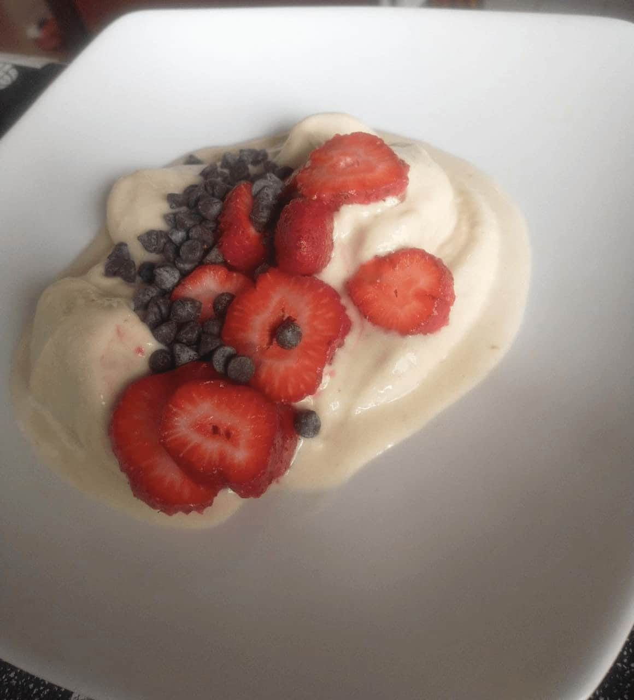

Recetas saludables.
Torta saludable.

Comenzamos batiendo 3 huevos en un bol, cuando se encuentren bien batidos, agregar 3 bananas pisadas, de preferencia bien maduras. Mezclamos bien y agregamos una cucharada sopera de miel, y un puñado de pasas de uva, y volvemos a mezclar. Incorporamos ahora 1 taza y 1/2 de harina integral, 1 taza de avena(instantanea o cruda) y dos cucharadas de harina leudante. Nos aseguramos que todos los ingredientes queden bien integrados, volcamos y esparcimos la mezcla en una bandeja para horno previamente aceitada y enharinada. Cocinar en horno pre-calentado durante 20 minutos. (Opcional,agregar un puñado de chocolate amargo en chips la mezcla.)
Pizza fugazzeta.

Para empezar, vamos a mezclar dos tazas de harina integral con dos cucharadas soperas de harina leudante en un bol, revolver hasta integrar, esparciendo los ingredientes hacia los costados, generando un espacio en el medio. En este espaciovolcaremos 1/4 de vaso aproximadamente de agua tibia y un chorro de aceite de girasol o de oliva. Volvemos a revolver nuevamente. Luego espolvoreamos la mezclacon un poco mas de harina, y procedemos a amasar. Despues de amasar alrededor de 10 minutos,tapar el bol con una bolsa o repasador y dejar reposar 30 o 40 ninutos. Por otro lado, cortar cebollas en aros finos, dorar ligeramente en sarten con un chorro de aceite,agregar pimienta a gusto. Tomar la masa, y esparcirla en la bandeja en que sera cocinada, agregar queso a gusto, y sobre este esparcir la cebolla. Cocinar en horno pre-calentado hasta que el queso se halla derretido (alrededor de 15 minutos.)
Helado.
Para el helado de banana: dejar en freezer 3 bananas, cortadas en trozos pequeños durante 24 horas. Pasado ese tiempo introducir en licuadora junto a media taza de leche, y licuar hasta conseguir contextura adecuada. Para el helado de frutilla:dejar congelar por 24 horas 500 gramos de frutillas y repetir el mismo procedimiento.(Opcional, decorar por encima con otras frutas, o un puñado de chipsde chocolate).
Pastafrola.

En un bol, mezclar 100 gramos de manteca con 3 huevos y un chorro de esencia de vainilla, luego batir energicamente. Agregar tambien la ralladura de un limon, 2 tazas de harina integral y una cucharada de polvo de hornear. Integrar los ingredientes, luego enharinar la mezcla y amasar durante 5 minutos, y dejar reposar dentro de heladera durante 1/2 hora. Pasado ese tiempo esparcir sobre una bandeja, agregar por encima el dulce,seguido de "chorizos finos" de masa, cocinar en horno pre-calentado,durante 20 minutos.
Fideos con albondigas.

Para comenzar, vamos a poner 4 o 5 tomates maduros a hervir, picar 2 cebollas medianas, medio aji y un diente de ajo. Una vez picados estos ingredientes, poner a dorar en olla tipo essen. Luego agregar 2 zanahorias ralladas. Cocinar 10 minutos, revolviendo frecuentemente y pasado ese tiempo agregar los tomates hervidos y un chorro abundante de aceite, agregar agua si es necesario(cocinar durante otros 15 minutos). Cocinar los fideos(500 gramos) en agua hirviendo. Mientras se cocinan los fideos, vamos a armar las albonidgas, para esto, vamos a batir 2 huevos en un bol, condimentamos con sal, pimienta, provenzal a gusto. Despues mezclamos, con las manos, los huevos con 600 gramos de carne picada, y a continuacion le integramos a la mezcla, tambien,la taza de avena. Armar bolitas y cocinar en horno. Calentar si es necesario,antes de servir.